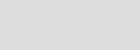
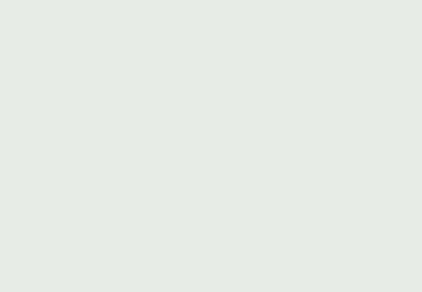

Летать всегда! Летать везде! Летать много и всегда с улыбкой под пятачком — вот наше кредо.
Все пиггасы рано или поздно приходят к осмыслению скучной жизни в луже и подаются в лётчики‑пилоты. Для полётов не нужна техника — только несокрушимое желание, упорство и чуточку вредности. Оно того стоит!
После недели тренировок на брезентовом батуте и трёх зачётных прыжков с крыши сарая адепт получает звание летуна‑прыгуна. Синяки, ссадины и шишки идут в плюс.
 